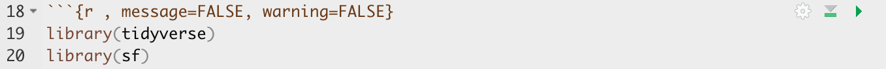
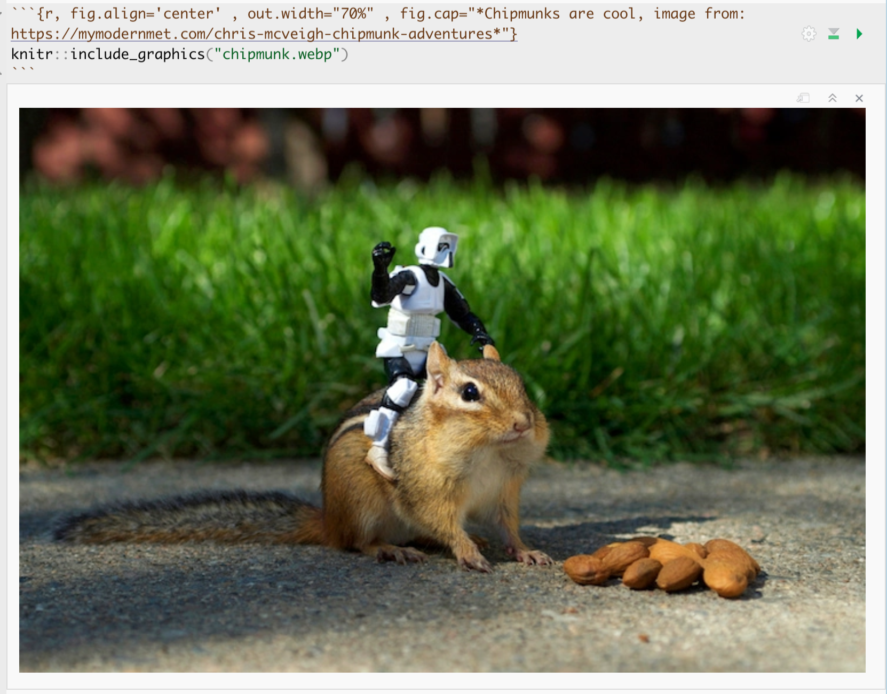
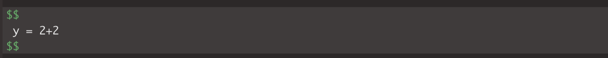
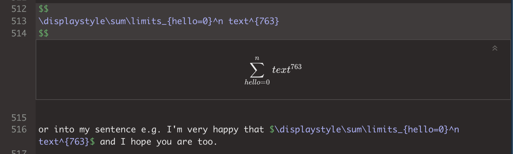

Tutorial 4: Markdown
GEOG-364 - Spatial Analysis
Tutorial 4: Markdown
This tutorial is all about getting used to the basic commands you can run in R.
- Tutorial 4A: What is markdown
- Tutorial 4B: Creating a markdown document
- Tutorial 4C: Markdown Basics
- Tutorial 4D: Knitting
- Tutorial 4E: YAML code
- Tutorial 4F: Formatting code chunks
- Tutorial 4G: Formatting text
- Tutorial 4H: Adding photos
- Tutorial 4I: Adding equations
- Tutorial 4J: Adding references
- Tutorial 4K: Adding tables
- Tutorial 4L: Different make formats
Tutorial 4A: What is markdown
Read more here: https://rmarkdown.rstudio.com
As I said at the start, the console is like a phone call to the computer, you’re talking but you’re not keeping records of what you say (you can always press the up key to see previous commands but that’s about it). When you close R, everything you have done will be lost.
What we need instead is a way to save the commands for future use - we can do this using scripts. There are several types of document, or script that you can create and save in R-Studio.
A basic script (the filetype is .r). This is simply just a blank notepad where you can save code commands. When you “run” the commands in the script, R simply copy/pastes the commands over to the console.
An R-Notebook or R-Markdown document (the filetype is .Rmd). These are much more interesting - and are how I wrote this lab book. This is what we will be using in our labs.
In a markdown document: imagine a normal Microsoft Word document, but halfway through you can press a button and a mini R console appears. You type your code inside the mini console, it runs and puts the plots/output just below - then you leave the console and continue writing about the results. Essentially you never have to take another screenshot of results and move it to your output…
Rmd files are also flexible. You can turn them into reports, websites, blogs, presentations or applications with a few short commands.
In this course we are going to focus on the R-Markdown format and you are going to submit your labs as websites/html files along with your code.
Tutorial 4B: Creating a markdown document
Time to make your own. Go to the File menu on the top left, then click New File - R-Markdown. If this is your first time ever, it might ask to download some packages to be able to do this. Say yes.
Eventually a window will open up:

It will ask you to name and save your file. Give it a relevant name. A new file should appear on your screen. At the top of that window (by the knit button, there is a save button. Save it as something relevant INSIDE YOUR PROJECT FOLDER!

The new file on your screen is your first markdown script. Essentially, we have some space for text, some space for code, and a space at the top of the file where we can add information about themes/styles etc.
Tutorial 4C: Markdown Basics
Your file contains some friendly text to explain what is going on, which I have annotated here. Read the file and see what it says.

Tutorial 4D: Knitting
The file on your screen isn’t the finished article. To see how it will look as a final version, we need to “knit” it.
Go to the top of the .Rmd file, find the knit button. Press it (you might have to first save your script if you haven’t already, then press it again)
You should see that the Markdown tab “builds” your document and you get an output as a website. The html should also be saved into your project folder.
For example, from my other class, here is a file with markdown and knitted output.

Tutorial 4E: YAML Code
Your YAML code is the code at the top of your file in between the — lines. (see @ref(fig:tut4fig4))). Let’s zoom in

Your YAML code controls how your final output looks and which type of output it becomes. For example, this could be a website (as for ours), a pdf, a presentation or app.. The basic version is very simple with a title, an author, a self entered date and that we just want a website.
Let’s add in more options.
YAML code is annnoying to edit, because here, spaces really do matter. Everything has to be perfect or it won’t knit.
Select everything in my code chunk here and replace your YAML with this (remember the — on line 1 and at the end).
---
title: "GEOG-364 - Lab 2"
author: "hlg5155"
date: "`r Sys.Date()`"
output:
html_document:
toc: true
toc_float: yes
number_sections: yes
theme: lumen
df_print: paged
---Replace the author ID with your user name, change the tite if appropriate, then click knit and see if it works.
The elements we just added are:
- The title
- The author (note,use your ID not your name)
- Automatically created today’s date
- A floating table of contents
- Numbered sections (this won’t appear until you start typing section headings)
- The document is now in the lumen theme.
Troubleshooting
Note, if you copy/paste this and it doesn’t work, sometimes the quote marks copy weirdly from the internet - try deleting and retyping the quotes.
If it still doesn’t work.. this might be because a space is missing (especially if you typed it out).
- Editing YAML code can be a pain. It is very case and space sensitive.
For example, the spaces at the start of some lines are important and are created using the TAB KEY, not the space bar. There is one TAB key before html_notebook (which is now on a new line). There are two TAB KEYS before toc, toc_float, number_sections and theme.
- Editing YAML code can be a pain. It is very case and space sensitive.
Don’t continue until you can make and view your html when you press knit. If it doesn’t work, ask for help before moving on
Changing the theme
You don’t need to choose the lumen theme. There are many other ways you can edit your markdown documents here: https://www.datadreaming.org/post/r-markdown-theme-gallery/
To edit, replace the word lumen with the name of your chosen theme (THIS IS CASE SENSITIVE). Now click knit and see if it works.Some themes are buggy. Try a different one if it doesn’t work.
The themes in “Even More Themes” on the website, requre you to install/load some new packages, so they need some extra work. You’re welcome to try if you have one you fell in love with!
Adding other YAML options
There are many more details about different options on these websites:
- https://bookdown.org/yihui/rmarkdown/html-document.html
- https://rstudio.com/wp-content/uploads/2015/03/rmarkdown-reference.pdf
If you want to get really fancy, there is an interesting package to help you design YAML code here: https://education.rstudio.com/blog/2019/10/tools-for-teaching-yaml-with-ymlthis/
Tutorial 4F: Formatting code chunks
Code chunk basics
The grey areas on your screen are called “code chunks” (see @ref(fig:tut4fig6)). Think of them as mini consoles. You put code inside, run them, then the result ends up directly below the chunk in
To run the code in a code chunk, Click on the little green triangle arrow at the top-right of the code chunk itself this will run all of the commands in that code chunk and put the results underneath**.
If you have the sample fileTry running the 3 code chunks in your document (the top one will do nothing).
Code chunks can be altered. For example, on line 19, delete summary(cars) and type 1+1. Now press the green arrow and the new answer should appear directly under your code chunk.
Click in the white space at the end of the script, press enter a few times (around line 33) and press the green insert button (top right near the Run button). Insert a new R code chunk. Inside, type 1+2 and run it.
Editing code chunk options
At the top of every code chunk, you should see the line “```{r}”.
Inside the curly brackets, you can add options to the code chunk for when you press knit. For example you can justify figures, change background colors, or decide if the code even displays/runs at all.
You can also add options in that first code chunk we have been ignoring. These will apply the options throughout the entire script. The echo option means "show the code as well as the output. The include option means show any sign of this code chunk at all in the final option (e.g. it runs it in the background).

Remove all the “welcome” text below the code chunk that loads the libraries when you press knit.
One useful option is to remove all the “friendly text” when you load libraries and press knit. The two options we need to turn to FALSE are message and warning.
We could edit the specific code chunk like this

But.. let’s edit the global option itself. Edit the code chunk ~line 8 to look like this:

Now the loading library text will still appear in your code the first time you run that code chunk, but it should disappear when you press knit.
Press knit and check it works!
Don’t continue until this works. If it doesn’t work, ask for help before moving on
Other code chunk options
There are loads here along with a nice tutorial: https://rmarkdown.rstudio.com/lesson-3.html
Inline code
Follow these tutorial to see how to add inline code. e.g. answers to commands INSIDE your text
- https://bookdown.org/yihui/rmarkdown-cookbook/r-code.html
- https://www.njtierney.com/post/2019/07/10/jq-verbatim-inline-r/
- https://rmarkdown.rstudio.com/lesson-4.html
Hint, when you write your own inline code, depending on how complex it is, you have a choice!
- You can either run your commands in a “silent” code chunk, save them to a variable and just put the variable name in your inline code to print.
- Or you can do the full calculation in the inline code itself. For example *
will make:
Hello, my birth month is Apr.
Or
Hello, my birth month is April.
Tutorial 4G: Formatting text
The text part of your document is anywhere outside your YAML code or a code chunk (see @ref(fig:tut4fig6)).
You can treat this like a slightly weird Word document, allowing you to write a report around your findings. Anywhere in the “text area” (AKA in the white space), click and press enter a few times. Write some text, press knit and your changes should have been incorporated.
Paragraphs and white space - READ THIS:
R is very sensitive to blank white lines. Put them everywhere. Put a blank line between paragraphs, before/after headings, before lists, before/after code chunks…. If your formatting isn’t working well, chances are there isn’t a blank line before or after it.
Markdown visual editor
Write Markdown in the RStudio visual editor
If you are not familiar with Markdown yet, or do not prefer writing Markdown code, RStudio v1.4 has included an experimental visual editor for Markdown documents, which feels similar to traditional WYSIWYG editors like Word, as shown in Figure 3.1. You can find the full documentation at https://rstudio.github.io/visual-markdown-editing/
Getting formatting help:
There are many ways you can format the text in your markdown document, from adding headings, to bold/itallic to complex html text formats.
I will add in a few ideas here, but there are better guides out there!
- I really like this reference: https://www.markdownguide.org/basic-syntax/
- Alternatively, go to the help menu AT THE TOP OF YOUR ENTIRE SCREEN. Scroll down and you will see “Markdown Quick reference”. That will open a quick reference guide on your screen.

Basic text formats
There are many ways you can format the text in your markdown document, from adding headings, to bold/italic to complex html text formats.
Rather than click a button to turn something bold like in Word, you have to add special characters to your text to change the formatting. For example try putting * on each side of some text you want to make italic.
The text formatting won’t show in the text itself, you will only see the formats when you press knit.
br>
Bold and italic:
Putting stars or _ around your text will make it bold or italic (or both). To understand how, take a look at the cheatsheets. Interestingly (and annoyingly), there is no simple way to underline text. ]
Headings
You can use the # symbol to make a heading
Outside a code chunk, the # symbol makes a heading, AS LONG AS YOU HAVE A WHITE LINE ABOVE AND BELOW AND A SPACE AFTER THE #. Have a look at Figure @ref(fig:tut4fig4) for an example.
You can have nested headings e.g. # HeadingName makes a main heading, ## SubHeadingName makes a subheading, ### SubSubHeadingName makes a sub-sub-heading
Including headings this way allows automatic section numbering and will allow the table of contents to automatically be created. In the script itself the headings won’t show up - you will only see them when you press knit.
Now let’s make your first heading.
- Press enter a few times so you have a blank line above and below.
- Now make a new heading by typing
# my new headingTHE SPACE AFTER THE # IS IMPORTANT.
Below that leave some white space and write some more text.
Tutorial 4H: Adding photos
There are many ways to do this, with a FANTASTIC tutorial here if you get stuck:
Step 1:
Go find your picture. If it’s on the internet the easiest way is to right click on it and press “save as”, then save the jpeg or png directly into your project folder with an easy filename.
Step 2:
Place your picture/photo into your project folder (e.g. your Lab 3 project folder).
Step 3:
Make a new code chunk.
REMEMER TO ADD BLANK LINES ABOVE AND BELOW THE CODE CHUNK.
Step 4
Inside the code chunk, use the knitr::include_graphics() command from the knitr package.

You’ll see I also added some code chunk options:
- echo=FALSE : don’t show the code
- fig.align - ‘center’ : Centre align the photo when you press knit
- out.width - ‘60%’ : Make your photo smaller or larger on the page
- fig.cap - “your caption” : Add a caption (IN QUOTES). I used * to make mine italic.
If you run the code chunk by pressing the green arrow, you will see the picture, but not things like the caption.
Now press knit and you should see the picture, caption and options, but not the code (if echo=FALSE is included)
Example
For example, here’s an example on chipmunks. The chipmunk.webp file is inside my project folder. (note, the file type doesn’t matter but you have to type it)
Here’s how it looks in my .Rmd file.

and in the actual report:

Chipmunks are cool, image from: https://mymodernmet.com/chris-mcveigh-chipmunk-adventures
For more options see the tutorial: http://zevross.com/blog/2017/06/19/tips-and-tricks-for-working-with-images-and-figures-in-r-markdown-documents/
Tutorial 4I: Adding equations
Great tutorial here: https://rmd4sci.njtierney.com/math Highly recomemended for details
Stand alone equations
We can add professional equations into your reports. We do this by making an “equation chunk”. Instead of the code-symbols , we use $$ where each contains a single equation. For example

will make
y = 2 + 2
Note the fancy version of the equation will definitely appear when you press knit and normally preview in your editing window. Yours might look fancier than mine when you press knit, my fonts aren’t working right.
Note, this isn’t real code! It’s fancy text. So you can lie and it doesn’t auto complete. e.g.

y = 2 + 2 y = 5 2 + 2 = 5 * hello
Inline equations
You can also add equations into your text using inline-equations. These are referenced by surrounding your equation with dollar signs: $.
This text (NORMAL TEXT NOT IN A CODE CHUNK)
Generates:
So this text would have an equation here E = mc2
Making complex equations
There are special symbols for all the greek/latin words, for making fractions, etc etc. The easiest way by far to create them, is to use an online equation generator where you can create the equation you want, then it will tell you the code
There are loads out there, for example: http://atomurl.net/math/

Then I copy the code into my text:

which should show as:
or into my text: e.g. I’m very happy that and I hope you are too.
Adding in R online code output
What if we want our equations to autocomplete? Well, we can combine this with our inline code. So instead of typing numbers we type code for it to calculate
For example:
will show as:
ERROR: What if it’s not working when I knit?
Sometimes R doesn’t understand the code when it presses knit, for example giving an error like the one above. This is the case with this website!
In this case, we can force R to create the equations. Instead of the $$ symbol, we can use an online website to convert it into an image and then get R to include that.
<p align="center"><img src="https://latex.codecogs.com/svg.latex?Z=YOUR.EQUATION.}" /></p>
For example here is some code and output
As far as I am aware, with this error, you can’t include inline R code - it sucks. If you have this error and can’t work through it, talk to a teacher
Tutorial 4J: Adding references
To be added
Tutorial 4K: Adding tables
To be added
Tutorial 4L: Different make formats
To be added
Website created and maintained by Helen Greatrex. Website template by Noli Brazil